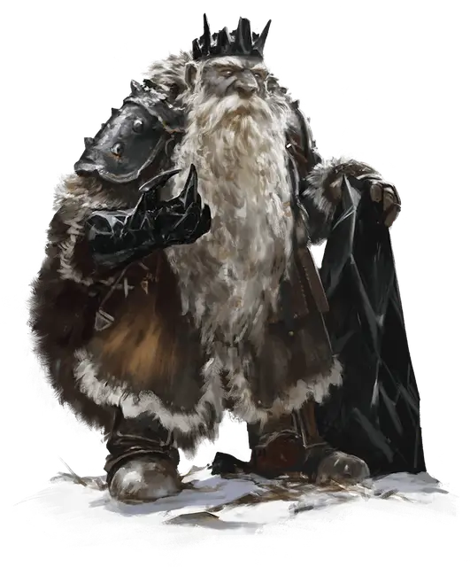

Зардорок Санблайт
Xardorok Sunblight
Средний Гуманоид (Дварф), законно-злой, именной НИП

Класс Доспеха 16 (кольчуга)
Хиты 93 (11к8 + 44)
Скорость 25 футов
| мод | спас | ||
|---|---|---|---|
| СИЛ | 16 | +3 | +3 |
| ЛОВ | 11 | +0 | +0 |
| ТЕЛ | 18 | +4 | +4 |
| мод | спас | ||
|---|---|---|---|
| ИНТ | 12 | +1 | +1 |
| МДР | 13 | +1 | +4 |
| ХАР | 18 | +4 | +7 |
Навыки Запугивание +7, Магия +4, Обман +7
Сопротивление урону яд
Чувства тёмное зрение 120 футов, пассивное Восприятие 11
Языки Общий, Дварфийский
Опасность 5 (1800 опыта)
Бонус мастерства +3
Особенности
Дуэргарская устойчивость. Зардорок совершает с преимуществом спасброски от яда, заклинаний и иллюзий, а также спасброски для сопротивления очарованию и параличу.
Чувствительность к солнечному свету. Находясь на солнечном свету, Зардорок совершает с помехой броски атаки, а также проверки Мудрости (Восприятие), полагающиеся на зрение.
Врождённое колдовство. Базовой характеристикой Зардорока является Харизма (Сл спасброска от заклинания 15, +7 к попаданию атаками заклинаниями). Он может накладывать следующие заклинания, не нуждаясь в материальных компонентах:
• Неограниченно: волшебная рука [mage hand], мистический заряд [eldritch blast] (см. раздел «Действия» ниже);
• 1/день каждое: внушение [suggestion], удержание личности [hold person].
Действия
Мультиатака. Зардорок совершает две атаки оружием или дважды накладывает мистический заряд [eldritch blast].
Шипастая рукавица. Рукопашная атака оружием: +6 к попаданию, досягаемость 5 фт., одна цель. Попадание: 5 (1к4 + 3) колющего урона или 8 (2к4 + 3) колющего урона под эффектом увеличения.
Мистический заряд (заговор). Дальнобойная атака заклинанием: +7 к попаданию, дистанция 120 фт., одно существо. Попадание: 9 (1к10 + 4) урона силовым полем.
Увеличение (перезаряжается после короткого или продолжительного отдыха). На 1 минуту Зардорок магическим образом увеличивается в размере вместе со всем, что несёт и носит. В увеличенном состоянии Зардорок Большого размера, удваивает кости урона в атаках, основанных на Силе (уже учтено), и совершает с преимуществом проверки Силы. Если Зардороку не хватает места, чтобы стать Большим, он приобретает максимальный размер, допустимый имеющимся пространством.
Невидимость (перезаряжается после короткого или продолжительного отдыха). Зардорок магическим образом становится невидимым, пока не атакует, не наложит заклинание, не использует Увеличение, или пока не окончится его концентрация, но не более 1 часа (как при концентрации на заклинании). Всё снаряжение, которое Зардорок несёт или носит, становится невидимым вместе с ним.
Реакции
Адское возмездие (2/день). Когда Зардорок получает урон от существа в пределах 60 футов, которого он может видеть, это существо охватывается адским пламенем и должно совершить спасбросок Ловкости Сл 15, получая 16 (3к10) урона огнём при провале или половину этого урона при успехе.
Описание
Зардорок Санблайт возглавляет клан дуэргаров Санблайт, который до недавнего времени обитал глубоко в подземельях под Хребтом Мира. В облике Глубинной Дуэрры, богини завоеваний, архидьявол Асмодей посетил Зардорока и призвал его захватить долину Ледяного Ветра, начиная с Десяти Городов.
Тёмная одержимость. Зардорок одержим чардалином и не выносит мысли, что кто-то ещё может им владеть. Весь чардалин, который находится в долине Ледяного Ветра, должен быть у него, и он использует эти запасы, чтобы выковать дракона и обрушить его на Десять Городов. Дополнительная информация о чардалине находится в разделе «Добро пожаловать на Крайний Север».
Отец девяти. Зардорок был трижды женат и произвел на свет девять детей. Он убил свою первую жену Тизрун за заговор с целью его убийства. Его вторая жена, Ирраска, погибла в результате обрушения туннеля вместе с двумя их дочерьми. Его третья жена, Маррал, была убита во время набега на анклав свежевателей разума, вместе с другой дочерью и тремя сыновьями. Зардорок убил своего старшего сына Ултхуна и сына Тизрун за заговор с целью захвата престола. Его выжившие потомки — два сына, рождённые ему Маррал, их зовут Дурт и Нильдар.
Облачённый в чардалин. Зардорок носит следующие немагические предметы, сделанные из чардалина: корона с девятью зубцами (два неповрежденных зубца символизируют двух его выживших сыновей, а семь частично сломанных — семерых его погибших детей), кольчуга и рукавица с шипами.